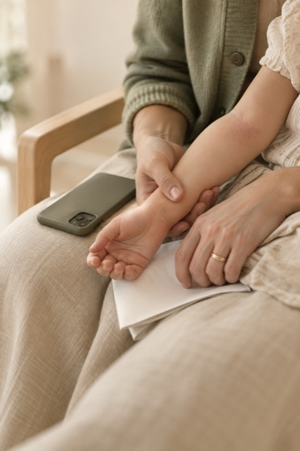
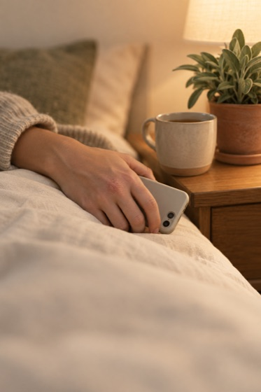
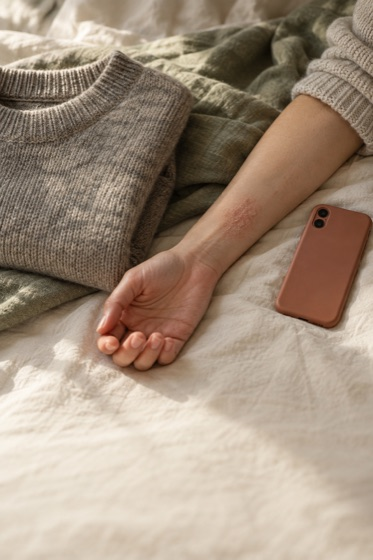
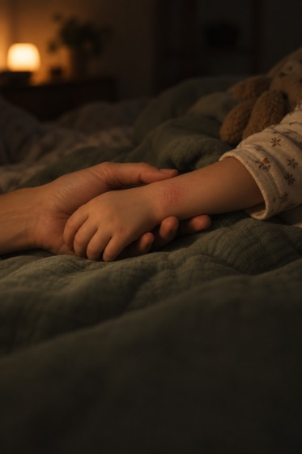
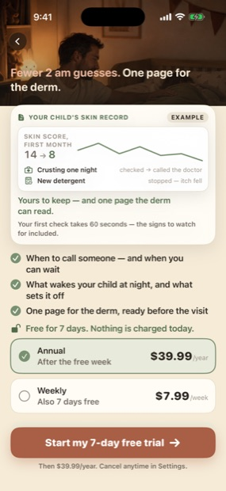
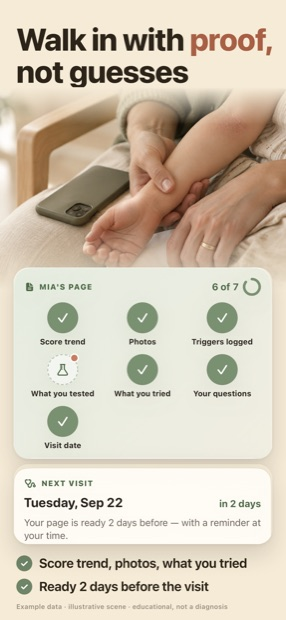

Что не получилось — раунд t1
Честный журнал производства от 20.09.2026: где ошибся Codex, где ошибся я, где упёрлись в приложение. Без этого списка кажется, что кадры «просто получились».
1. Сцены: Codex (GPT-Image)
Семь промптов — семь сцен с первого прохода, ни одного брака по compliance: лиц нет нигде, экранов и текста в кадре нет, экзема показана мягко (сухое покраснение, без мокнутия и корок). Но три вещи не получились.




| Что | Как вышло | Что сделали |
|---|---|---|
| Разрешение | Codex отдаёт 1024 × 1536, а полоса фото в кадре — 1290 px по ширине | Апскейл на 1,26× при отрисовке. На глаз при 100 % терпимо, но для ASC лучше просить максимальное разрешение или апскейлить Real-ESRGAN |
| S01, нижний край | Кисть ребёнка читается как стопа | Кадрирование: проблемная зона уходит под карточку |
| S06, аффинитивность | Сцена не говорит об экземе — это просто уютная тумбочка | Оставлено в t1, помечено как слабое место. В t2: рука с телефоном ночью, пятно в фокусе |
| Натюрморт без людей | Не генерировали вовсе | Jev дал «предметный натюрморт без людей» 0.00 — деньги и время на него тратить незачем |
2. Съёмка живых экранов: симулятор
Правило было одно: в карточке должны быть настоящие пиксели сборки, а не нарисованный в дизайне интерфейс. Из-за этого пришлось собрать приложение и снять экраны, и вот что мешало.

isPro = true, но менеджер подписок при старте перетирает флаг: без песочничной покупки приложение честно считает пользователя бесплатным. Лечится подменой домена аргументов: -salvora.subscription.isPro YES (плюс onboarding.done, setup.complete, disclaimer.acceptedAt).
nowrap, кегль уменьшается с 47 pt, пока обе строки не влезут; то же для двух строк пользы (19,5 → минимум 16 pt).| Проблема | Причина | Решение / статус |
|---|---|---|
| Вкладка и лист одновременно не открываются | debug.startTab переключает таб и сбрасывает уже поднятый sheet | Снимаем раздельно: либо таб, либо лист |
| Лист не успевал открыться | Снимок через 5 с после запуска — приложение ещё сидит на Today | 8–9 с. Два кадра (месячный обзор, красные флаги) переснимались |
| Не переключилась аудитория на «взрослый / TSW» | -salvora.debugAudience self не применился, имя ребёнка «Mia» осталось; бейдж «TSW · month 9» при этом встал | Вся серия t1 снята на родительском сценарии. Кадры под Jessica/Sarah — после разбора ключа аудитории |
| Не удалось снять саму страницу для врача | «Open page» открывает экран экспорта PDF; сама страница — после тапа «Generate PDF» | В S01 карточка «6 of 7» + «Next visit». Страница-PDF — в t2, нужна UI-автоматизация |
| UI-автоматизации нет | osascript не авторизован слать события в System Events (-1743), прокрутка и тапы недоступны | Все кадры сняты только тем, что достижимо флагами запуска. Карточка триггеров поэтому взята из месячного обзора, а не с прокрученного Today |
| Отладочная «гайка» в кадре | Первый снимок вкладки Doctor сделан без -salvora.hideDebugUI YES | Переснято; кроп с гайкой выброшен |
3. Вёрстка кадров
| Проблема | Причина | Решение |
|---|---|---|
| Первые семь кадров вышли пустыми — один кремовый фон | Страница читает frames.json через fetch, а Chrome по file:// его блокирует | Локальный http-сервер на время сборки |
| Chrome подвисал и не выходил | --headless=new с общим профилем; процессы копились, кадры не дописывались | --headless=old + отдельный --user-data-dir + сторож на 45 с |
| Карточка «Next visit» обрезалась на полуслове | Кроп захватывал начало строки «Change date» | Нижняя граница кропа поднята на 38 px |
4. Осталось честно недоделанным
| Что | Почему важно |
|---|---|
| S06: ответ Ask с чипами источников | Сейчас в карточке шапка вкладки («Answers with sources · AI, not a doctor»), а не сам ответ. Заголовок обещает источник — показать его нужно буквально |
| 6.5″ (1284 × 2778) | Вторая обязательная витрина; та же вёрстка, другой холст |
| Локализация | de-DE — полная пересъёмка («Neurodermitis», «Schub»), en-GB/CA/AU — только текст |
| Баг приложения | На вкладке Ask для ребёнка по имени Mia предлагается вопрос «…start working for Emma?» — имя не подставляется в шаблон. Починить до съёмки t2 |